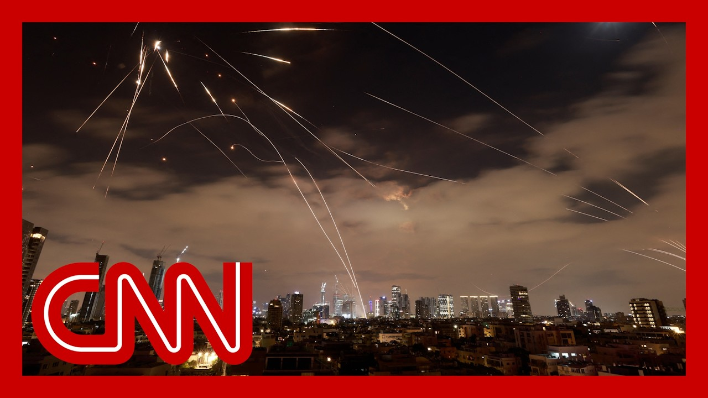

【伊朗新一轮袭击击中以色列，冲突进入第四天】
Summary: More breaking news out of Israel, where at least eight people have been killed and dozens injured in the latest round of missile strikes launched by Iran. Israel's national emergency service says multiple locations were hit on Monday morning. Explosions were seen in the coastal city of Haifa, where missiles hit an oil refinery. Central Israel's power grid was also damaged in the latest of the back and forth strikes over the weekend. Israeli officials say at least 23 people have now been killed since Iran's retaliation began. Meanwhile, in Iran, at least 224 people have been killed in Israeli airstrikes since Friday. That's according to the country's Ministry of Health. The IDF vows the airstrikes will only get more intense from here. But Iran's president says the country's response will escalate as well, putting more innocent lives at risk.
摘要： 以色列最新消息：伊朗发动新一轮导弹袭击，造成至少8人死亡、数十人受伤。以色列国家紧急服务部门称，周一早上多个地点遇袭。沿海城市海法发生爆炸，导弹击中一处炼油厂。周末的互相袭击中，以色列中部电网也受损。以方官员称，自伊朗报复开始以来，至少23人丧生。与此同时，伊朗卫生部表示，自周五以来，以军空袭已造成伊朗至少224人死亡。以色列国防军誓言将加大空袭力度，而伊朗总统警告称将升级报复行动，更多无辜生命面临威胁。

⏱️ Estimated Reading Time: 13 min
📚 六级生词 📚 雅思生词 📚 托福生词 📚 专八生词 📚 SAT生词 📚 考研生词 📚 GRE生词 📚 高考生词
More breaking news out of Israel, where at least eight people have been killed and dozens injured in the latest round of missile strikes launched by Iran.
以色列最新消息：伊朗发动新一轮导弹袭击，造成至少8人死亡、数十人受伤。
Israel's national emergency service says multiple locations were hit on Monday morning.
以色列国家紧急服务部门称，周一早上多个地点遇袭。
Explosions were seen in the coastal city of Haifa, where missiles hit an oil refinery.
沿海城市海法发生爆炸，导弹击中一处炼油厂。
Central Israel's power grid was also damaged in the latest of the back and forth strikes over the weekend.
周末的互相袭击中，以色列中部电网也受损。
Israeli officials say at least 23 people have now been killed since Iran's retaliation began.
以方官员称，自伊朗报复开始以来，至少23人丧生。
Meanwhile, in Iran, at least 224 people have been killed in Israeli airstrikes since Friday.
与此同时，自周五以来，以军空袭已造成伊朗至少224人死亡。
That's according to the country's Ministry of Health.
伊朗卫生部公布了这一数据。
The IDF vows the airstrikes will only get more intense from here.
以色列国防军誓言将加大空袭力度。
But Iran's president says the country's response will escalate as well, putting more innocent lives at risk.
而伊朗总统警告称将升级报复行动，更多无辜生命面临威胁。
Israel. each Israel knows no boundaries.
以色列。每个以色列人都知道没有边界。
They intrude wherever they want with permission from America.
他们凭借美国的许可肆意入侵。
More.
更多。
We are by no means seeking to expand the war.
我们绝不寻求扩大战争。
But naturally, as our army, a powerful IRGC, and our dear people have shown, appropriate responses have been given so far.
但正如我们强大的伊斯兰革命卫队和人民所展现的，我们已作出适当回应。
The more they try to escalate naturally, the responses will become tougher and more severe.
他们越是升级行动，我们的回应将越强硬严厉。
More innocent people may lose their lives.
更多无辜者可能丧生。
These hidden.
这些隐藏的。
Jeremy Diamond was at the scene of one missile strike in Tel Aviv, and filed this report just a short while ago.
杰里米·戴蒙德在特拉维夫导弹袭击现场发回最新报道。
I'm at the site of an Iranian ballistic missile attack in central Tel Aviv.
我现在位于特拉维夫市中心遭遇伊朗弹道导弹袭击的现场。
This ballistic missile struck this area in the early hours of this morning, severely damaging three residential buildings right behind me.
今晨早些时候，弹道导弹击中该区域，严重损毁我身后三栋居民楼。
As you can see, in this whole street is littered with debris as rescue crews move in and out, still trying to assess the damage to find anybody who might be trapped under the rubble, and also to get people out of their apartments there.
如您所见，整条街道布满瓦砾，救援队进出搜寻可能被困者，并协助居民撤离。
Also, folks who have arrived here to try and get back inside to get some of their belongings and to make sure that their loved ones are okay.
也有民众试图返回取回物品或确认家人安全。
This is one of four ballistic missile attack sites in Central Tel Aviv alone.
这仅是特拉维夫市中心四个弹道导弹袭击点之一。
In addition, there was a ballistic missile attack in northern Israel in Haifa as well.
此外，以色列北部海法也遭弹道导弹袭击。
More than 70 people were injured in these attacks, according to Magen David Adom, Israel's national rescue services.
以色列国家救援机构红大卫盾会称，袭击已致70多人受伤。
And of course, we are seeing that these attacks are continuing to escalate and concern is rising here in Israel about the number of casualties and how many more may come.
显然袭击持续升级，以色列民众对伤亡数字的担忧与日俱增。
Jeremy Diamond, CNN, Tel Aviv.
CNN记者杰里米·戴蒙德，特拉维夫报道。
Let's dig deeper.
让我们深入分析。
CNN's Paula Hancocks is now joining me from Abu Dhabi.
CNN的葆拉·汉考克斯从阿布扎比连线。
Paula, thanks for being with me again.
葆拉，感谢再次连线。
We appreciate it.
非常感谢。
Things are moving so quickly across the region.
地区局势瞬息万变。
Tell me, what is the latest that you're seeing now?
目前有哪些最新进展？
Well, Ben, we are seeing the casualty figures going up in Israel.
本，以色列伤亡数字正在上升。
For example, now at 23, the early hour, a barrage of hundreds of missiles from Iran did hit a number of different areas.
例如目前死亡23人，凌晨时分伊朗数百枚导弹击中多个地区。
Tel Aviv, as Jeremy was showing you there.
如杰里米所示，特拉维夫遇袭。
And also central Israel and some of the coastal areas as well.
以色列中部及部分沿海地区也遭袭击。
Now we know that in Haifa, for example, alongside the coast, that city, there are still fires burning in some areas.
目前海法等沿海城市部分地区仍有大火。
There were some missiles that hit or at least one hit close to an oil refinery in Haifa itself.
有导弹击中或至少接近海法一处炼油厂。
Now a number of residential buildings across the country have been impacted.
全国多栋居民楼受损。
We understand from authorities that that most of these missiles are being intercepted, but we are seeing that a number are getting through, certainly Tehran, by firing hundreds of missiles at the same time, is hoping to to overwhelm and overpower the missile defense systems of Israel.
当局称大部分导弹被拦截，但仍有漏网之鱼。德黑兰通过同时发射数百枚导弹试图压倒以色列防空系统。
Now, when it comes to what is happening in Iran, we are seeing panicked residents into Iran try to get out of the city that we have seen, gridlock on the roads, heading north to a more rural and isolated area.
在伊朗，恐慌的民众试图逃离城市，道路拥堵，人们涌向北部偏远地区。
Many people are trying to get to gas stations, are overcrowded as well as many are trying to escape the areas they believe may be more dangerous.
加油站人满为患，民众争相逃离危险区域。
Now, we've heard from the Israeli military that Iranian residents should move away and evacuate if they live anywhere near a weapons production facility, because they say that that is a target.
以军警告伊朗居民远离武器生产设施周边，称这些是打击目标。
This was announced on Sunday.
该声明发布于周日。
And then just a matter of hours later, an announcement came from the Iranian authorities telling Israeli residents to move and evacuate if they are anywhere near the Israeli military.
几小时后，伊朗当局也发布公告，要求以军设施附近的以色列居民撤离。
So both sides still claiming that they are targeting the military infrastructure of the other country.
双方均声称只打击对方军事设施。
But clearly we are seeing residents and civilians are being impacted, with Israel showing no sign of backing down.
但平民显然受到影响，而以色列毫无退让迹象。
What's their endgame?
他们的终极目标是什么？
Some say regime change or others say it's about eliminating Iran's nuclear capabilities completely.
有人认为是政权更迭，也有人说是彻底消除伊朗核能力。
We've set them back dramatically, but not enough.
我们已重创其核计划，但还不够。
And that's why this, series of strikes is not going to end today or tomorrow, but only at a period of time, which may take weeks when we are absolutely certain that the nuclear infrastructure with the intention of weaponizing and threatening Israel is terminated.
因此打击不会立即停止，将持续数周直至确保其武器化核设施被彻底摧毁。
What's clear here is that this is a conflict that has the potential to lead to a broader regional war, with the risk of pulling in major powers, including the U.S., the Trump administration is already walking a major diplomatic tightrope.
显然这场冲突可能引发更广泛的地区战争，甚至牵连美国等大国，特朗普政府正进行艰难外交斡旋。
Joining me now is CNN global Affairs analyst Kim Dozier.
现在连线CNN全球事务分析师金·多齐尔。
Kim, as always, welcome back.
金，欢迎回来。
I want to start with with the sort of physical battle.
首先谈谈实际战况。
At first it was the military, military leaders, nuclear facilities.
最初目标是军方领导人、核设施。
How has this changed over the last 48 hours?
过去48小时有何变化？
they also took out some of the Iranian scientists in civilian areas, which meant civilian casualties.
以军还袭击了平民区的伊朗科学家，导致平民伤亡。
We're seeing them expand a bit to energy facilities.
打击范围已扩展至能源设施。
The Israelis, the.
以色列方面...
As to the Israelis, on the Iranian side, last time they volleyed missiles at Israel in April 2024.
伊朗方面，上次在2024年4月袭击以色列时。
They stuck to military sites.
他们只攻击军事目标。
This time they're using a lot less care.
这次则不加区分。
And according to the IDF, the Israeli Defense Forces, they are using dumb missiles, ones that can't be guided.
以国防军称伊朗使用无制导的"笨导弹"。
But Iran only had 2000 some odd ballistic missiles to begin with.
但伊朗仅有约2000枚弹道导弹。
We don't quite know how many drones, and they have to preserve them because much of their leadership has been taken out.
无人机数量不明，且其领导层遭重创需保存实力。
Much of their air defenses have been taken out.
大量防空系统被毁。
And now every time they move a launch platform to try to hide from the Israelis, the Israelis are watching and taking those out.
每次移动发射平台试图隐蔽都会遭以军打击。
Now, this means a lot of people are saying that this is the right time to go for regime change.
许多人认为现在是推动伊朗政权更迭的时机。
The reporting over the weekend, we have it at CNN as well, that the white House decided not to go for Supreme Court to kill Iran's supreme leader or be part of that.
CNN获悉白宫决定不参与针对伊朗最高领袖的斩首行动。
What would regime change mean in this moment?
此刻政权更迭意味着什么？
Is Iran just that vulnerable?
伊朗是否如此脆弱？
What is the question the white House is facing?
白宫面临哪些问题？
Well, the Israelis would like regime change.
以色列希望政权更迭。
Netanyahu has said as much.
内塔尼亚胡已明确表态。
But from the Trump administration perspective, the only reason to say no to the Israelis to take out the supreme leader is to preserve the opportunity to go back to those talks, to use this good cop, bad cop that Israel is taking out all of Iran's military but also economic might, what it needs to survive, and then saying, okay, you've got to negotiate with us to keep your people fed and keeping the supreme leader alive preserves that possibility.
但特朗普政府认为保留谈判可能才是拒绝斩首行动的原因，通过以色列摧毁伊朗军事经济命脉后，保留最高领袖可维持"好警察坏警察"策略的谈判空间。
But I think it underestimates, the pride of the Iranian regime having been taken out like this.
但这低估了伊朗政权遭此打击后的尊严感。
I don't think they'll be back to peace talks anytime soon.
短期内和谈难以重启。
Yeah.
是的。
We've heard so much from, about Israel and the idea of the Operation Roaring Lion.
我们听过以色列"咆哮雄狮行动"的说法。
But I actually was thinking about something else, which is this idea of, like, the octopus doctrine that Iran was at the center of something with many tentacles that was always threatening to Israel.
但我在思考"章鱼学说"——伊朗作为核心通过多触角威胁以色列。
What do you see now with this latest proactive attack on Iran?
如何看待以色列这次对伊朗的主动打击？
How far is Israel gone in doing what it hoped to do?
以色列实现目标了吗？
Well, one of the reasons Israel couldn't do this before is there were hundreds of missiles in Lebanon pointed at major Israeli cities.
此前以色列无法行动是因为黎巴嫩有数百枚导弹瞄准其城市。
It would have been much worse than the volley that we've seen hit Haifa, and some of the suburbs of Tel Aviv so far this time around.
若当时行动后果会比现在海法和特拉维夫郊区遇袭更严重。
but by taking Hezbollah out in Lebanon and by taking other proxies out, Yemen still has capability, but they're far away.
但通过削弱黎巴嫩真主党等代理人，也门虽仍有能力但距离遥远。
they have really allowed this kind of attack to go forward.
这为以军行动创造了条件。
And this was one of the reasons pushing them into this attack.
这也是推动此次袭击的原因之一。
Never again would be would Iran be so undefended.
伊朗防御从未如此薄弱。
So from the Israeli perspective, they have made their country safer, even if they're going to be facing this volley of missiles in the coming weeks.
因此从以色列角度看，国家变得更安全，尽管未来数周可能面临更多导弹袭击。
And even now, it's not clear where Iran would turn to correct for any kind of support.
目前也不清楚伊朗能寻求何种支持。
Arab leaders are speaking in favor of Iran, even Saudi Arabia, calling them brothers, because in the Arab and Islamic street, people are furious over this.
阿拉伯领导人甚至沙特都声援伊朗，因阿拉伯和伊斯兰民众对此愤怒。
And even though the white House is trying to say we didn't take part in this attack, they're still being seen as part and parcel and backing this violence against Iran, especially because they're protecting Israel.
尽管白 House 强调未参与袭击，但仍被视为支持对伊暴力，特别是因其保护以色列。
You know, Kim, thank you so much.
金，非常感谢。
Always a lot of context when I speak with you, I appreciate it.
每次交流都获益良多。